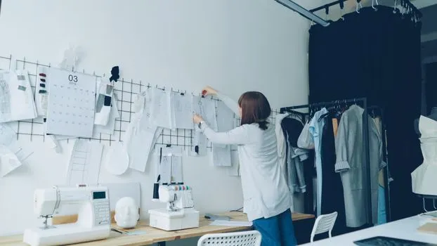
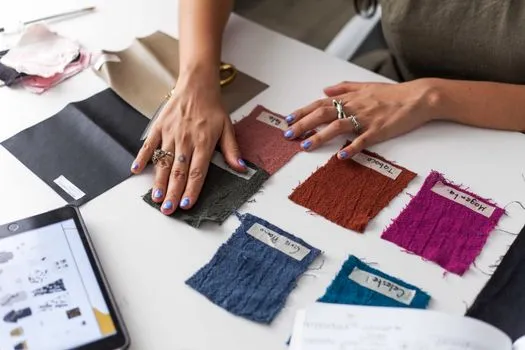
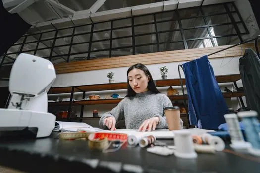
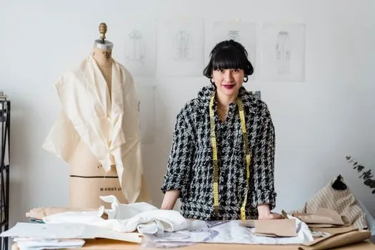
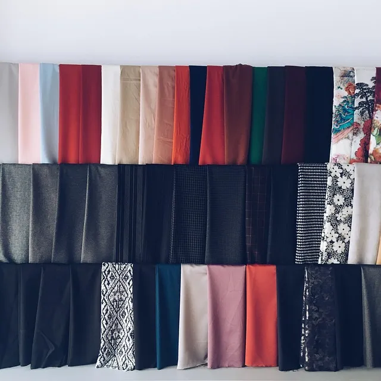
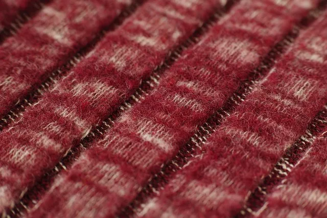
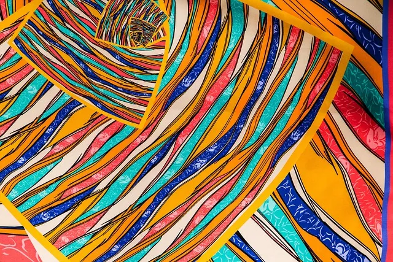
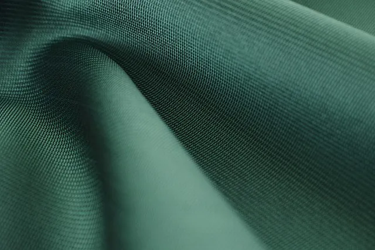

pexels 36731322Vitaly Gariev
Fashion designer organizing sketches in a modern garment studio with tools and fabrics.
Original sourcefashion designer studio fabric clothing · temporary stock only

pexels 36731322Vitaly Gariev
Fashion designer organizing sketches in a modern garment studio with tools and fabrics.
Original source
pexels 8030147Los Muertos Crew
Fashion designer evaluating textile swatches for a new collection in a studio.
Original source
pexels 8769327Gustavo Fring
A focused fashion designer works in a studio, surrounded by sewing tools, cloth, and a coffee cup.
Original source
pexels 7148002Michael Burrows
Positive Asian female dressmaker with measuring tape on neck standing at wooden table with fabrics during work in atelier in dayti
Original source
pixabay 1490513Snow0107
fabric, clothing, studio, textile, needlework, design, fashion, color, fabric, fabric, fabric, fabric, fabric, clothing, clothing,
Original source
pixabay 1803873Engin_Akyurt
hot, wool, red, fabric, tissue, backgrounds, detail, macro, close up, studio, nobody, horizontal, textile, abstract, softness, pat
Original source
pixabay 2642229Engin_Akyurt
fabric, laptop wallpaper, tissue, color, pattern, color image, desktop backgrounds, textile, macro, detail, nobody, weaving, abstr
Original source
pixabay 2346211Engin_Akyurt
fabric, desktop backgrounds, macro, detail, nobody, horizontal, design, pattern, tissue, cool backgrounds, abstract pattern, studi
Original source